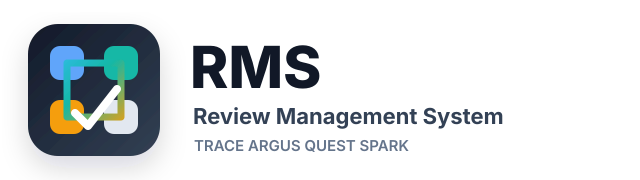

This copied integration workspace uses a staged shared-login model. Local application sessions may still need app-specific logout handling, but this page acts as the common platform return point for sign-out flows.